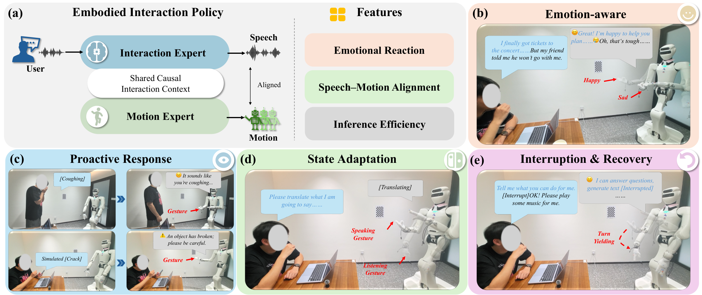
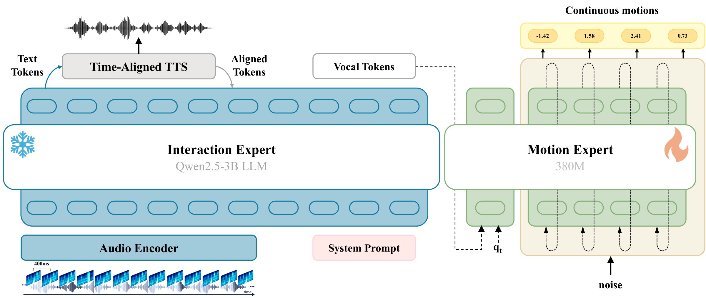

Embodied Interaction Policy
A Unified Model for Full-Duplex Human–Robot Interaction
Embodied Interaction Policy: A Unified Model for Full-Duplex Human–Robot Interaction

Demonstrations
Real-world interaction
Simulation
Abstract
Real-time human-robot social interaction requires continuous coordination between speech and physical behavior. Existing systems often separate interaction agents from motion generation, complicating coordination as conversational states change. We propose Embodied Interaction Policy (EIP), a unified streaming framework that couples an Audio-Interaction expert with a motion expert through layer-wise joint attention. This allows motion generation to directly access the evolving interaction context.
A chunk-wise causal mask prevents access to future context, while a vocal token encodes speaking state and the semantic emotion of the response. We construct Embodied Interaction Dataset (EI-Data) from co-speech and dyadic interaction data and train our model in two stages to learn state-adaptive and emotion-conditioned behavior. Combined with the frozen interaction expert, EIP supports continuous robot motion during proactive responses and interruption-aware turn-taking.
Quantitative evaluations demonstrate improved motion quality over representative gesture-generation baselines. Compared with a representative cascaded system, EIP achieves higher interaction success and reduces warm-start latency by 64%. Physical deployment and user studies further demonstrate improved motion naturalness and interaction comfort.
Method
Contributions

BibTeX
Publication details will be added with the paper release.
@misc{eip,
title = {Embodied Interaction Policy: A Unified Model
for Full-Duplex Human--Robot Interaction},
author = {Gui, Youqiang and Liu, Yunfei and Lin, Lijian
and Zhu, Ye and Wang, Jianan and Peng, Cheng
and Li, Yu},
note = {Publication details forthcoming}
}